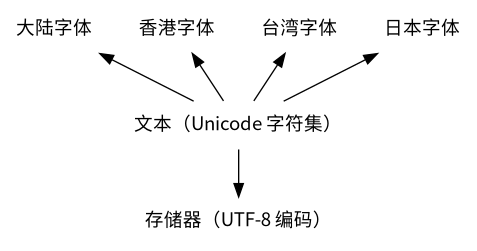
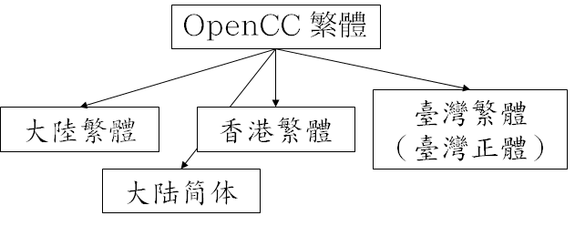

同時發佈於知乎：繁简中文转换概说 - 三日月 綾香的文章

在计算机中储存的字符，都要经过 编码。目前通用的编码是 UTF-8 编码。
UTF-8 编码的对象是 Unicode 字符集，换言之，只有 Unicode 字符集收录的字符才能被编码。
Unicode 字符集的每个字符都有唯一的 Unicode 码位。一段连续的 Unicode 码位称为 区。
Unicode 中收录的汉字分布在以下几个区：
从码位并不能直接判断简繁体。
有一些区是为兼容其他字符集而设的，称为 兼容区；还有一些区域是为用户自己造字而设的，称为 私人使用区（PUA），一般情况下不应使用。但是，这些区的字符在计算机上的显示效果有时与普通的字符并无差异，在处理来源不明的数据时需要特别留意。
中国大陆、香港、台湾、日本、韩国、新加坡等地各有不同的汉字标准（或规范，以下通称标准），详见维基百科 汉字标准列表。
中文环境的汉字标准共有五种：
实际上大陆繁体并不常见，因为大陆出版的古籍亦需要保留原文样态，不会随意根据现代标准修改。
地区差异分为以下几类：
以下分别讲解。
例如「削弱」一词，香港与台湾均用「削（U+524A）弱」，但是分别使用香港与台湾的字体显示，会有明显差异。
此类差异，需要用户选用合适的字体，方能正确显示，例如 思源黑体 支持陆、港、台、日、韩五地的汉字字形。
作为开发者，通常是通过在代码中指定语言来解决，例如「育」字：
<ul>
<li>大陆：<span lang="zh-CN">育</span></li>
<li>台湾：<span lang="zh-TW">育</span></li>
</ul>效果如下：
对于「说明」一词中的「说」字，香港用「説」(U+8AAC)，台湾用「說」(U+8AAA)，码位本身就不相同。但是，尽管「説」、「說」码位不同，却明显是同一汉字，这样的关系称为 微差异码。
对于「化妝」一词中的「妝」字，香港用「粧」(U+7CA7)，台湾用「妝」(U+599D)，码位不相同，且为不同汉字。
OpenCC 项目 总结了古籍、书法、文字学等领域传统的繁体汉字用字，据此确定的用字标准称为 OpenCC 标准。

OpenCC 用字标准制定的原则之一是「能分则不合」，基本杜绝了下面提到的几类「一对多」问题。
「一简对多繁」是指同一个简体汉字可能对应多个繁体汉字的现象。由于一简对多繁，在将简体汉字转换为繁体汉字时，不能简单地逐字转换，需要考虑上下文。
| 简体 | 繁体 |
|---|---|
| 发 | 發（發行） |
| 髮（頭髮） |
| 简体 | 繁体 |
|---|---|
| 面 | 面（下面） |
| 麪（下麪條） |
常有人将简体的「头发」转换为繁体的「頭發」，就是因为一简对多繁的影响。
（在台湾标准中「麪」写作「麵」）
与「一简对多繁」类似，还有「一繁对多简」问题，但这种情况远少于「一简对多繁」。
| 繁体 | 简体 |
|---|---|
| 乾 | 乾（乾坤） |
| 干（干燥） |
繁体汉字的不同标准之间也存在一对多的情况，称为「一繁对多繁」，但这种情况也远少于「一简对多繁」。
一台湾繁对多香港繁
| 台湾繁体 | 香港繁体 |
|---|---|
| 著 | 著（著作） |
| 着（拿着） |
一香港繁对多台湾繁
| 香港繁体 | 台湾繁体 |
|---|---|
| 台 | 臺（臺灣） |
| 台（普通话 tāi，天台山） |
（现在台湾民间也常用「台灣」，与香港同）
一香港、台湾繁对多 OpenCC 繁
| 香港、台湾繁体 | OpenCC 繁体 |
|---|---|
| 才 | 才（組織才能十分出衆） |
| 纔（實幹纔能夢想成真） |
OpenCC 基本杜绝了「一对多问题」，换言之，如果文本使用 OpenCC 用字标准，转换为其他用字标准时通常不会出现「一对多」，故不需要根据上下文进行额外的判断。
但是，OpenCC 标准也有少数例外：
一、「湧」、「涌」问题
| OpenCC 繁体 | 香港繁体 |
|---|---|
| 涌 | 湧（湧起） |
| 涌（普通话 chōng，粤语 cung¹，東涌） |
「涌」是粤语区常见的地名用字。OpenCC 标准依据的是古代传统典籍，根据《说文解字》确定「涌」为「湧」的本字，因此将「湧」写为「涌」，并不考虑粤语区的情况。
二、「无线」、「有线」问题
实际使用时，由于历史原因，并不一定遵守标准。如香港公司名：「無綫」、「有線」。
不同地区的用词存在差异。例如：
出于本地化的需要，繁简转换通常至少需要考虑中国大陆、台湾、香港的用词差异。
用字差异、编码差异与用词差异无关，是相互独立的：
OpenCC 是用于繁简转换的程序，许多 Linux 发行版已内置该程序，Windows 系统亦可自行编译安装。
由于「一对多」现象的存在，繁简转换不是简单地逐字对应，而是需要以词为单位考虑。因此，繁简转换分为两步：分词与词汇转换。
OpenCC 默认采用「正向最长匹配」的分词算法。例如，若词库中同时存在「快取」、「記憶體」和「快取記憶體」，则「快取記憶體」的切分结果为「快取記憶體」而不是「快取/記憶體」。
词汇转换就是将分词后的词汇逐一查找转换表。若有多个结果，就返回第一个。
若用户编译 OpenCC 不成功，也可以自行实现。下面是使用 57 行 Python 代码的一种简易实现（仅为示例，不做性能优化，且命令行参数有一定差异）。
首先将 词典数据 置于 data 文件夹中，然后编写代码如下：
#!/usr/bin/env python3
# -*- coding: utf-8 -*-
import argparse
import os
import pygtrie
import sys
def build_trie(ds): # build a trie
t = pygtrie.CharTrie()
for d in ds: # read a list of dictionaries
with open(os.path.join('dict', d + '.txt')) as f:
for line in f:
if line != '\n' and line[0] != '#': # ignore empty and commented lines
l, r = line.rstrip().split('\t') # split the line by TAB
t[l] = r # put words into the trie
return t
def replace_words(s, t):
l = [] # list of coverted words
while s:
longest_prefix = t.longest_prefix(s) # match the longest prefix
if not longest_prefix: # if the prefix does not exist
l.append(s[0]) # append the first character
s = s[1:] # remove the first character from the string
else: # if exists
l.append(longest_prefix.value.split(' ')[0]) # append the first converted word
s = s[len(longest_prefix.key):] # remove the word from the string
return ''.join(l)
DICT_FROM = \
{ 'cn': ('STCharacters', 'STPhrases')
, 'hk': ('HKVariantsRev', 'HKVariantsRevPhrases')
, 'tw': ('TWVariantsRev', 'TWVariantsRevPhrases')
, 'twp': ('TWVariantsRev', 'TWVariantsRevPhrases', 'TWPhrasesRev')
, 'jp': ('JPVariantsRev',)
}
DICT_TO = \
{ 'cn': ('TSCharacters', 'TSPhrases')
, 'hk': ('HKVariants', 'HKVariantsPhrases')
, 'tw': ('TWVariants',)
, 'twp': ('TWVariants', 'TWPhrasesIT', 'TWPhrasesName', 'TWPhrasesOther')
, 'jp': ('JPVariants',)
}
parser = argparse.ArgumentParser(description='Open Chinese Convert (OpenCC) Command Line Tool')
parser.add_argument('-f', '--from', default='cn', dest='from_region', help='from region')
parser.add_argument('-t', '--to', default='twp', dest='to_region', help='to region')
args = parser.parse_args()
s = sys.stdin.read()
if args.from_region != 't':
s = replace_words(s, build_trie(DICT_FROM[args.from_region]))
if args.to_region != 't':
s = replace_words(s, build_trie(DICT_TO[args.to_region]))
sys.stdout.write(s)OpenCC 可在命令行中使用，亦可通过 API 在程序中调用。
命令行用法
将繁体中文（OpenCC 标准）转换为简体中文（中国大陆），不转换用词：
$ echo '嘗試' | opencc -c t2s
尝试将简体中文（中国大陆）转换为繁体中文（香港），不转换用词：
$ echo '地球仪' | opencc -c s2hk
地球儀将简体中文（中国大陆）转换为繁体中文（台湾），转换用词：
$ echo '内存' | opencc -c s2twp
記憶體应用举例：输入法
使用 Python 查看汉字的 Unicode 码位：
>>> print(hex(ord('一')))
0x4e00将 0x 换为 U+，即可得到汉字「一」的 Unicode 码位为 U+4E00。
使用 Python 查看 Unicode 码位对应的字符：
>>> print(chr(0x9fa5))
龥这说明 Unicode 码位 U+9FA5 对应汉字「龥」。
Unicode 是 字符集，UTF-8 是对 Unicode 字符集的一种 编码方式。
$ python -c 'print(hex(ord("湫")))'
0x6e6b
$ echo -n 湫 | xxd -ps
e6b9ab前两行表明「湫」字的 Unicode 码位是一个抽象的十六进制数字 U+6E6B，不涉及具体编码；后两行表明「湫」字在计算机中实际上是以十六进制的 UTF-8 编码 e6b9ab 存储的。